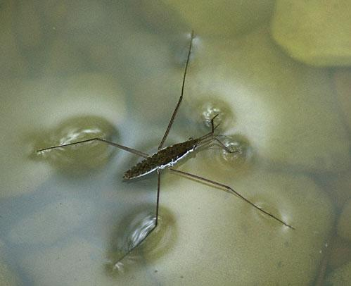

The water strider is an insect with a very special ability. It can use its long legs to “grip” the water and then walk on it. What special ability allows it to do so? The water strider uses surface tension, the tendency of the liquid surfaces to act as a stretched elastic film. As long as the pressure of the insect on the water surface does not exceed the force of surface tension, the water layer will not break.

Surface tension is caused by the attraction between the liquid’s molecules due to various intermolecular forces. In the bulk of the liquid, each molecule is pulled equally in every direction by neighboring liquid molecules, resulting in a net zero force. The molecules at the surface of the liquid are pulled inwards by the molecules deeper inside the liquid and are not attracted as intensely by the molecules of the neighboring medium (be it vacuum, air or another liquid). Therefore, all of the molecules at the surface are subject to an inward force of molecular attraction which is balanced only by the liquid’s resistance to compression, meaning there is no net inward force. However, there is a driving force to diminish the surface area. Thus the liquid squeezes itself together until it has the locally lowest surface area possible.

Determination of surface tension of a liquid by the capillary tube method.

Capillary action occurs when the adhesion to the walls is stronger than the cohesive forces between the liquid molecules. The height to which capillary action will take water in a uniform circular tube is limited by surface tension. When the lower end of a vertical glass tube is placed in a liquid such as water, a concave meniscus forms. Surface tension pulls the liquid column up until there is a sufficient mass of liquid in the capillary whose gravitational forces balance the intermolecular forces. The contact length (around the edge) between the top of the liquid column and the tube is proportional to the diameter of the tube, while the weight of the liquid column is proportional to the square of the tube’s diameter, so a narrow tube will draw a liquid column higher than a wide tube.
Acting around the circumference, the upward force is
Fupwards= T2πr
where T = surface tension and
r = radius of capillary tube
The height h to which capillary action will lift water depends upon the weight of water which the surface tension will lift; that is,
where ρ = density of liquid. Hence, if we know the radius of the tube, the density of the liquid and the height of the liquid in the tube we can calculate the force of surface tension as
T = hρrg/2
The unit of surface tension is N m-1 or J m-2.


- We have seen that when a capillary glass tube is dipped into water the water level rises inside the tube. But when an wide-bore glass tube is dipped in water no rise is observed. Why?
- How does the surface tension of pure water differ from that of salt solution?
- Will all liquids rise in the capillary glass tubes ?
- What would happen if the capillary tube is broken at a height less than ‘h’? Will the liquid overflow?
- What is the principle of the mercury barometer ?

 Experiments
Experiments Feedback
Feedback